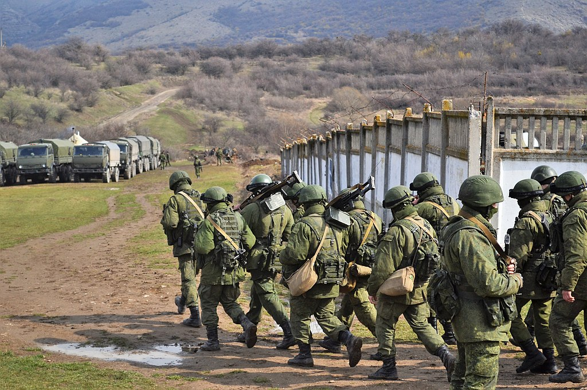
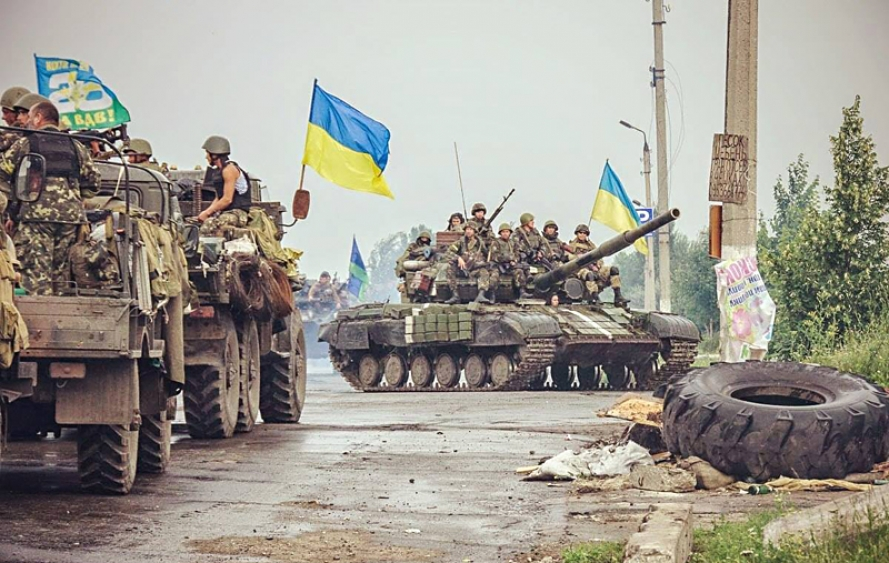
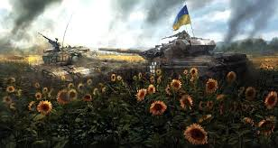

Збройні Сили України
Збройні Сили України - це військове формування, на яке відповідно до Конституції України покладаються оборона України, захист її суверенітету, територіальної цілісності і недоторканності.
Збройні Сили України забезпечують стримування збройної агресії проти України та відсіч їй, охорону повітряного простору держави та підводного простору у межах територіального моря України у випадках, визначених законом, беруть участь у заходах, спрямованих на боротьбу з тероризмом.
З’єднання, військові частини і підрозділи Збройних Сил України відповідно до закону можуть залучатися до:
- здійснення заходів правового режиму воєнного і надзвичайного стану,
- заходів із забезпечення національної безпеки і оборони, відсічі і стримування збройної агресії Російської Федерації у Донецькій та Луганській областях,
- здійснення заходів правового режиму воєнного і надзвичайного стану,
- організації та підтримання дій руху опору,
- проведення військових інформаційно-психологічних операцій,
- захисту суверенних прав України в її виключній (морській) економічній зоні та на континентальному шельфі та їх правового оформлення,
- заходів щодо запобігання розповсюдженню зброї масового ураження, протидії незаконним перевезенням зброї і наркотичних засобів, психотропних речовин, їх аналогів або прекурсорів у відкритому морі,
- надання військової допомоги іншим державам, а також брати участь у міжнародному військовому співробітництві, міжнародних антитерористичних, антипіратських та інших міжнародних операціях з підтримання миру і безпеки на підставі міжнародних договорів України та в порядку і на умовах, визначених законодавством України.
Коротка хронологія подій
Захоплення Криму Росією у лютому-березні 2014 року (з подальшим початком тимчасової окупації півострова Росією 20 лютого 2014).
Один з наслідків і одна зі складових частин російської збройної агресії проти України з 2014 р. Анексії у лютому-березні 2014 р. передували організовані антиукраїнські виступи у містах Криму, блокада і захоплення стратегічних об'єктів півострова і військових частин ЗСУ підрозділами російської армії у деяких випадках під прикриттям окремих цивільних осіб і новостворених спецслужбами РФ «загонів самооборони Криму», що поклало початок окупації Криму Росією.
Війна на сході України (на Донбасі) з квітня 2014 року, яка розпочалася зі створення під прикриттям «народних» виступів спецслужбами РФ так званих Донецької та Луганської «народних республік»
Війна на сході України, або Війна на Донбасі, — збройний конфлікт, розпочатий російськими загонами, які вторглися у квітні 2014 року на територію українського Донбасу після захоплення Російською Федерацією Криму, серії проросійських виступів в Україні і проголошення «державних суверенітетів» ДНР і ЛНР. Конфлікт має характер міжнародного і став продовженням російської збройної агресії проти України. За географічним масштабом є локальним і охоплює частини Донецької і Луганської областей України.
Російське вторгнення в Україну з 24 лютого 2022 року, яке розпочалося після тривалого військового нарощування та визнання Росією терористичних квазідержав «ДНР» та «ЛНР» як державних утворень.
Російське вторгнення в Україну 2022 року — відкритий воєнний напад Росії, за підтримки Білорусі, на Україну, розпочатий о 4 годині ранку 24 лютого 2022 року. Вторгнення є частиною російсько-української війни, розв'язаної Росією 2014 року, участь у якій Росія постійно заперечувала. В ЗМІ та юридичних документах російське вторгнення в Україну 2022 року розглядається як агресивна війна Росії проти України
